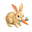
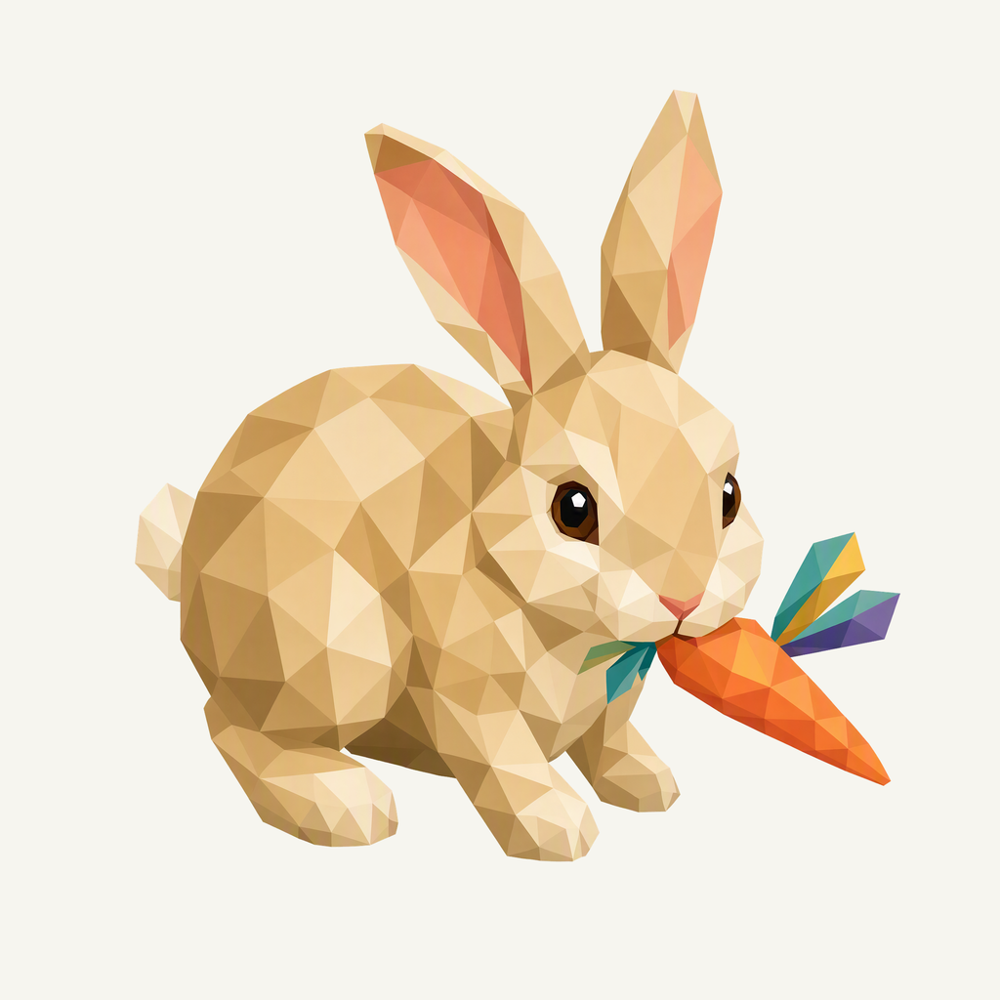
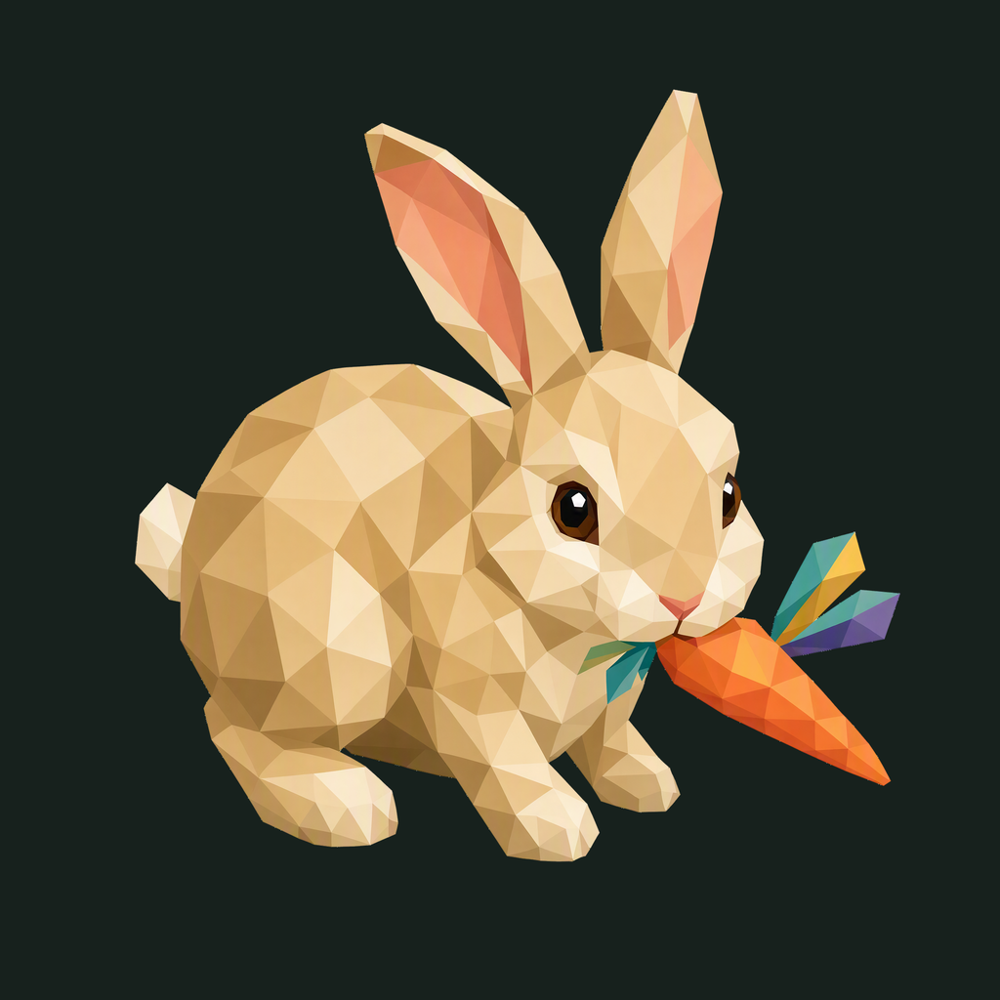

01 / Composition
A small discovery
A rabbit pauses in a natural crouch beside a carrot. The whole animal includes its ears, haunches, short forepaws and small tail; the face carries the moment.
Animal family · Refined identity
A little rabbit finds a carrot. Warm facets and a quiet playful setting.
Adopted redesign · finishing 01
Native 2048 × 2048

01 / Composition
A rabbit pauses in a natural crouch beside a carrot. The whole animal includes its ears, haunches, short forepaws and small tail; the face carries the moment.
02 / Drawing
Large warm tan and cream facets keep the body soft and readable. One carrot and its colorful leaves form a single accent group beside the muzzle.
03 / Presentation
Offset rounded paper folds sit on a warm clay field. Their gentle corners and broad openings give the rabbit a tactile, quiet setting.
Presentation tiles at 128/64 px; transparent artwork for small app and browser marks.

The complete animal and accessory have at least 183.5 px clearance from the actual rounded outline. Ten export sizes preserve one uniform placement. Small app/browser marks use the transparent foreground; fine facets and accessory details simplify at 16 px.
A designed background, with colors sampled from the exact native artwork.
Select a swatch to copy its hex value. The Gaga UI primary (#4C5342) remains a separate product color.
One transparent foreground, checked on two contrasting backgrounds.


Azure Foundry · gpt-image-2 · one request · native 2048 × 2048
Loading study text…
The previous identity is historical context; the current brief defines the selected animal, gesture and palette. Frogie guides connected flat facets; these owner-provided boards guide the independent background, offset framing, and matte surface.


{kind=link}
{kind=link}
{kind=link}
{kind=link}
{kind=link}